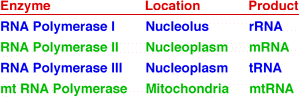

Eukaryotic Gene Expression Problem Set
Problem 10: Regulating mRNA synthesis
Help to answer the question
Which of the following is NOT involved in regulating the synthesis of RNA in the eukaryotic nucleus?
|
A.
|
active genes in euchromatin, and inactive genes in heterochromatin
|
|
B.
|
amplification of some genes such as rRNA genes
|
|
C.
|
use of different RNA polymerases to transcribe different classes of RNA
|
|
D.
|
spliceosomes that stimulate synthesis of intron-containing hnRNAs
|
|
E.
|
enhancers that can stimulate specific promoters
|
Tutorial
Spliceosomes
|
Spliceosomes are RNA-protein complexes active in processing of nuclear RNA transcripts in eukaryotic cells. For a review of the action of spliceosomes, review the tutorial to question 6. Spliceosomes are not believed to act in regulation of RNA synthesis in the nucleus.
|
Regulation of eukaryotic RNA synthesis
By contrast, all of the other answer choices represent mechanisms for potential regulation of eukaryotic RNA synthesis.
Euchromatin vs Heterochromatin:
Euchromatin represents areas of the chromosomal DNA available for active transcription. Heterochromatin are transcriptionally inactive stretches of DNA due to the sequestering of the DNA template in DNA-protein complexes.
Gene Amplification:
Genes expressed at high levels, such as rRNA, tRNA, and histone mRNA genes are generally present in high copy number. Additional amplification of rRNA genes occurs in some organisms during rapid growth, i.e. frog oocytes.
Multiple RNA Polymerases:
The eukaryotic nucleus contains three major classes of DNA-dependent RNA polymerase. Enzymes of the different classes have different transcriptional specificity, and recognize different types of promoters, as summarized in the following table:

Enhancers:
An enhancer is a specific DNA sequence that is recognized by a transcriptional activator. The activator is a protein that can bind to the enhancer DNA sequence and increase the amount of RNA synthesized from a specific gene. Enhancers are associated with the promoter for a gene. The promoter is the DNA sequence recognized by the RNA polymerase as a correct start site for the synthesis of RNA. The enhancer can be located hundreds, or even several thousand base pairs from the promoter and still bind with activators to increase the amount of RNA synthesized from a promoter.
Proteins that recognize enhancers generally bind to the DNA sequence in the major groove with one of several evolutionarily conserved DNA-binding motifs, such as zinc finger, leucine zipper, homeodomain, or helix-turn-helix.
|
  
   
The Biology Project
University of Arizona
Tuesday, November 4, 1997
Contact the Development Team
http://www.biology.arizona.edu
All contents copyright © 1997. All rights reserved.
|